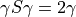

qmlearn.drivers package#
Submodules#
qmlearn.drivers.core module#
- class qmlearn.drivers.core.Engine(mol=None, method='rks', basis='6-31g', xc=None, **kwargs)[source]#
Bases:
objectAbstract Base class for the External calculator. Until now we have implemented: PySCF and Psi4.
- Attributes
vextndarrayExternal Potential.
gammandarray1-body reduced density matrix (1-RDM).
gammatndarray2-body reduced density matrix (2-RDM).
etotalfloatTotal Energy.
forcesndarrayAtomic Forces.
ovlpndarrayOverlap Matrix.
kopndarrayKinetic Energy Operator.
- erindarray
2-electron integrals: 8-fold or 4-fold ERIs or complex integral array with N^4 elements (N is the number of orbitals).
- orbndarray
Molecular orbital coefficients
Methods
calc_gamma([orb, occs])Calculate the 1-body reduced density matrix (1-RDM).
calc_idempotency(gamma[, ovlp, kind])Check idempotency of gamma
calc_ke(gamma[, kop])Get Total kinetic energy
calc_ncharge(gamma[, ovlp])Get calculated total number of electrons
init
run
- calc_gamma(orb=None, occs=None)[source]#
Calculate the 1-body reduced density matrix (1-RDM).
- Parameters
- orbndarray
Orbital Coefficients. Each column is one orbital
- occsndarray
Occupancy
- Returns
- 1-RDMndarray
- calc_idempotency(gamma, ovlp=None, kind=1)[source]#
Check idempotency of gamma

- Parameters
- gammandarray
1-RDM
- ovlpndarray
Overlap matrix
- Returns
- errorsumfloat
Sum over the Absolute difference among matrix 1 and 2.
- Attributes
- kindint
- 1 : Level 12 : Level 23 : Level 3
- calc_ke(gamma, kop=None)[source]#
Get Total kinetic energy
- Parameters
- gammandarray
1-RDM
- kopndarray
Kinetic energy operator
- Returns
- kefloat
Total kinetic energy
- calc_ncharge(gamma, ovlp=None)[source]#
Get calculated total number of electrons
- Parameters
- gammandarray
1-RDM
- ovlpndarray
Overlap Matrix
- Returns
- nchargeint
Calcualted number of electrons
- property etotal#
Total Energy.
- property forces#
Atomic Forces.
- property gamma#
1-body reduced density matrix (1-RDM).
- property gammat#
2-body reduced density matrix (2-RDM).
- property kop#
Kinetic Energy Operator.
- property ncharge0#
Calculated number of electrons.
- property ovlp#
Overlap Matrix.
- property vext#
External Potential.
- qmlearn.drivers.core.atoms2bestplane(atoms, direction=None)[source]#
Apply Principal Component Analysis (PCA) to atoms and re-oriente them.
- Parameters
- atoms:obj: ASE atoms object
Atoms coordinates
- Returns
- atomsndarray
Reoriented atom positions
- Attributes
- directionndarray
1D-vector to re-orient the atoms positions
- qmlearn.drivers.core.atoms2newdirection(atoms, a=(0, 0, 1), b=(1, 0, 0))[source]#
Function to re-orientate the atom positions. If Vector is None, the default rotation is around X-axis.
- Parameters
- atoms:obj: ASE atom object
- Returns
- atomsndarray
Rotated atoms coordinates
- qmlearn.drivers.core.atoms_rmsd(target, atoms, transform=True, **kwargs)[source]#
Function to return RMSD : Root mean square deviation between atoms and target:transform atom object. And the target atom coordinates.
- Parameters
- target:obj: ASE atoms object
Reference atoms.
- atoms:obj: ASE atoms object
Atoms to be transformed (Rotate y/o translate).
- Returns
- rmsdfloat
RMSD betwwen reference and transform atoms.
- atoms:obj: ASE atoms object
Transformed target molecule.
- Attributes
- keepbool
If True keep a copy of atoms.
- transformbool
If True minimize rotation and translation between refatoms and atoms. (See ASE documentation: Minimize RMSD between atoms and target.)
- qmlearn.drivers.core.diff_coords(target, pos=None, weights=None, diff_method='rmsd')[source]#
Function to return mean base on method error/deviation between pos and target atomic positions.
- Parameters
- pos:obj: ASE atoms object
Reference atoms.
- target:obj: ASE atoms object
Atoms to be transformed (Rotate y/o translate).
- Returns
- rmsdfloat
Mean base on method error/deviation between pos and target atomic positions
- Attributes
- diff_methodstr
- RMSD(root-mean-square deviation) : ‘rsmd’RMSE(root-mean-square error) : ‘rmse’MSD(mean-square deviation) : ‘msd’MSE(mean-square error) : ‘mse’MAE(mean absolute error) : ‘mae’
- qmlearn.drivers.core.get_atoms_axes(atoms)[source]#
Get PCA components of atomic positions.
- Parameters
- atoms:obj: ASE object
- Returns
- axesndarry
Vector containing the PCA components of the atomic positions
- qmlearn.drivers.core.get_match_rotate(target, atoms, rotate_method='kabsch')[source]#
Rotate Atoms with a customize method
- Parameters
- target:obj: ASE atoms object
References atoms
- atoms:obj: ASE atoms object
Initialize atoms
- Returns
- rotatendarray
Rotated atom positions
- Attributes
- rotate_metod: str
- None : ‘none’Kabsch : ‘kabsch’Quaternion : ‘quaternion’
- qmlearn.drivers.core.minimize_rmsd_operation(target, atoms, stereo=True, rotate_method='kabsch', reorder_method='hungarian', use_reflection=True, alpha=0.2)[source]#
Function to create Rotation Matrix and Translation Vector of reference atoms with respect to initialize atoms.
- Parameters
- target:obj: ASE atoms object
References atoms
- atoms:obj: ASE atoms object
Initialize atoms
- Returns
- rotatendarray
Rotation Matrix
- translatendarray
Translation Vector
- rmsd_final_indicesndarry
Reorderred atom indices
- qmlearn.drivers.core.reorder_atoms_indices(target, atoms, reorder_method='hungarian')[source]#
Reorder atoms indices
- Parameters
- target:obj: ASE atoms object
References atoms
- atoms:obj: ASE atoms object
Initialize atoms
- Returns
- indicesndarray
Reordered atom indices
- qmlearn.drivers.core.rmsd_coords(target, pos, **kwargs)[source]#
Function to return RMSD : Root mean square deviation between pos and target atomic positions.
- Parameters
- pos:obj: ASE atoms object
Reference atoms.
- target:obj: ASE atoms object
Atoms to be transformed (Rotate y/o translate).
- Returns
- rmsdfloat
RMSD between pos and target atomic positions
qmlearn.drivers.mol module#
- class qmlearn.drivers.mol.QMMol(atoms=None, engine_name='pyscf', method='rks', basis='6-31g', xc=None, occs=None, refatoms=None, engine_options={}, charge=None, engine=None, stereo=True, rotate_method='kabsch', reorder_method='hungarian', use_reflection=True, **kwargs)[source]#
Bases:
objectClass to create qmlearn mol object.
Methods
convert_back(y[, prop, rotate, reorder])Function to rotate gamma or forces base on initial coordinates.
duplicate(atoms, **kwargs)Function to create a duplicate image of Atomic coordinates ('refatoms')
init()Function to initialize qmlearn object.
run
- property atom_naos#
Number of atomic orbitals.
- convert_back(y, prop='gamma', rotate=True, reorder=True, **kwargs)[source]#
Function to rotate gamma or forces base on initial coordinates.
- Parameters
- prostr
Options
1-RDM : ‘gamma’Forces : ‘forces’- yndarray
Predicted gamma or forces matrix to be rotated.
- Returns
- yndarray
Rotated gamma or forces matrix.
- duplicate(atoms, **kwargs)[source]#
Function to create a duplicate image of Atomic coordinates (‘refatoms’)
- Parameters
- atoms:obj: PySCF or ASE atom object
Molecular geometry
- Returns
- obj:obj: PySCF or ASE atom object
Reference atoms.
- engine_calcs = ['calc_gamma', 'calc_ncharge', 'calc_etotal', 'calc_etotal2', 'calc_ke', 'calc_dipole', 'calc_quadrupole', 'calc_forces', 'calc_idempotency', 'rotation2rotmat', 'get_atom_naos', 'vext', 'ovlp', 'nao']#
- init()[source]#
Function to initialize qmlearn object.
- Parameters
- atoms:obj: PySCF or ASE atom object
Molecular geometry
- engine_namestr
Options:
PySCF (Default) : ‘pyscf’Psi4 : ‘psi4’- methodstr
- PySCF:
- DFT : ‘dft’HF : ‘hf’RKS : ‘rks’RHF : ‘rhfMP2 : ‘mp2’CISD : ‘cisd’FCI : ‘fci’
- Psi4:
- HF(‘rhf+hf’) : ‘hf’RHF(‘rhf+hf’) : ‘rhfSCF(‘rks+scf’) : ‘scf’RKS(‘rks+scf’) : ‘rks’MP2(‘rhf+mp2’) : ‘mp2’
- basisdict or str
To define basis set.
- xcdict or str
To define xchange-correlation functional
- chargeint
Total electronic charge.
- property rotmat#
Rotated density matrix
qmlearn.drivers.psi4 module#
- class qmlearn.drivers.psi4.EnginePsi4(**kwargs)[source]#
Bases:
qmlearn.drivers.core.Engine- Attributes
Methods
calc_gamma([orb, occs])Calculate the 1-body reduced density matrix (1-RDM).
calc_idempotency(gamma[, ovlp, kind])Check idempotency of gamma
calc_ke(gamma[, kop])Get Total kinetic energy
calc_ncharge(gamma[, ovlp])Get calculated total number of electrons
calc_dipole
calc_etotal
calc_exc
calc_quadrupole
calc_quadrupole_nuclear
init
init_mol
run
- calc_gamma(orb=None, occs=None)[source]#
Calculate the 1-body reduced density matrix (1-RDM).
- Parameters
- orbndarray
Orbital Coefficients. Each column is one orbital
- occsndarray
Occupancy
- Returns
- 1-RDMndarray
- property eri#
- property kop#
Kinetic Energy Operator.
- property nelectron#
- property ovlp#
Overlap Matrix.
- property vext#
External Potential.
- property xcfunc#
qmlearn.drivers.pyscf module#
- class qmlearn.drivers.pyscf.EnginePyscf(**kwargs)[source]#
Bases:
qmlearn.drivers.core.EnginePySCF calculator
- Attributes
etotalTotal Energy.
forcesAtomic Forces.
gamma1-body reduced density matrix (1-RDM).
gammat2-body reduced density matrix (2-RDM).
kopKinetic Energy Operator.
naoNatural atomic orbitals.
ncharge0Calculated number of electrons.
nelectronTotal number of electrons.
ovlpOverlap Matrix.
vextExternal Potential.
Methods
calc_dipole(gamma, **kwargs)Get the total dipole moment.
calc_etotal(gamma, **kwargs)Get the total electronic energy based on 1-RDM.
calc_etotal2(gammat[, gamma1])Get the total electronic energy based on 2-RDM.
calc_forces(gamma, **kwargs)Function to calculate Forces with a given 1-RDM
calc_gamma([orb, occs])Calculate the 1-body reduced density matrix (1-RDM).
calc_idempotency(gamma[, ovlp, kind])Check idempotency of gamma
calc_ke(gamma[, kop])Get Total kinetic energy
calc_ncharge(gamma[, ovlp])Get calculated total number of electrons
calc_quadrupole(gamma[, traceless])Function to calculate the total quadruple for XX, XY, XY, YY, YZ, ZZ components.
calc_quadrupole_nuclear([mol])Function to calculate the nuclear quadruple for XX, XY, XY, YY, YZ, ZZ components.
init(**kwargs)Function to initialize mf PySCF object
init_mol(mol, basis[, charge])Function to create PySCF atom object
rotation2rotmat(rotation[, mol])Function to rotate the density matrix.
run([properties, ao_repr])Caculate electronic properties using PySCF.
run_forces(**kwargs)Function to calculate Forces with calculated 1-RDM
get_atom_naos
- calc_dipole(gamma, **kwargs)[source]#
Get the total dipole moment.
- Parameters
- gammandarray
1-RDM
- Returns
- diplist
The dipole moment on x, y and z component.
- calc_etotal(gamma, **kwargs)[source]#
Get the total electronic energy based on 1-RDM.
- Parameters
- gammandarray
1-RDM
- Returns
- etotalfloat
Total electronic energy.
- calc_etotal2(gammat, gamma1=None, **kwargs)[source]#
Get the total electronic energy based on 2-RDM.
- Parameters
- gammandarray
1-RDM
- gammatndarray
2-RDM
- Returns
- etotalfloat
Total electronic energy.
- calc_forces(gamma, **kwargs)[source]#
Function to calculate Forces with a given 1-RDM
- Parameters
- gammandarray
1-RDM
- Returns
- forcesndarray
Total atomic forces for a given 1-RDM.
- calc_gamma(orb=None, occs=None)[source]#
Calculate the 1-body reduced density matrix (1-RDM).
- Parameters
- orbndarray
Orbital Coefficients. Each column is one orbital
- occsndarray
Occupancy
- Returns
- 1-RDMndarray
- calc_quadrupole(gamma, traceless=True)[source]#
Function to calculate the total quadruple for XX, XY, XY, YY, YZ, ZZ components.
- Parameters
- gammandarray
1-RDM
- Returns
- quadrupolndarray
An array containing a quadruple per component.
- calc_quadrupole_nuclear(mol=None)[source]#
Function to calculate the nuclear quadruple for XX, XY, XY, YY, YZ, ZZ components.
- Parameters
- gammandarray
1-RDM
- Returns
- quadrupolndarray
An array containing the nuclear quadruple per component.
- property etotal#
Total Energy.
- property forces#
Atomic Forces.
- property gamma#
1-body reduced density matrix (1-RDM).
- property gammat#
2-body reduced density matrix (2-RDM).
- init(**kwargs)[source]#
Function to initialize mf PySCF object
- Parameters
- mol:obj: PySCF or ASE atom object
Molecular geometry
- basisdict or str
To define basis set.
- xcdict or str
To define xchange-correlation functional
- verbose :int
Printing level
- methodstr
- DFT : ‘dft’HF : ‘hf’RKS : ‘rks’RHF : ‘rhfMP2 : ‘mp2’CISD : ‘cisd’FCI : ‘fci’
- chargeint
Total charge of the molecule
- init_mol(mol, basis, charge=0)[source]#
Function to create PySCF atom object
- Parameters
- mollist or str (From PySCF) or ASE atom object
To define molecluar structure. The internal format is
atom = [[atom1, (x, y, z)],[atom2, (x, y, z)],…[atomN, (x, y, z)]]- basis: dict or str
To define basis set.
- Returns
- atoms:obj: PySCF atom object
Molecular Structure, basis, and charge definition into gto PySCF atom object
- property kop#
Kinetic Energy Operator.
- property nao#
Natural atomic orbitals.
- property nelectron#
Total number of electrons.
- property ovlp#
Overlap Matrix.
- rotation2rotmat(rotation, mol=None)[source]#
Function to rotate the density matrix.
- Parameters
- rotationndarray
Rotation Matrix
- mol:obj: PySCF mol object
Molecluar structure
- Returns
- rotmatndarray
- Rotated density matrix
- run(properties=('energy', 'forces'), ao_repr=True, **kwargs)[source]#
Caculate electronic properties using PySCF.
- Parameters
- propertiesstr
- Total electronic energy : ‘energy’Total atomic forces : ‘forces’
- If ‘energy’ is choosen the following properties are also calculated:
- 1-RDM (1-body reduced density matrix) : ‘gamma’2-RDM (2-body reduced density matrix) : ‘gammat’Occupation number : ‘occs’Molecular orbitals : ‘orb’
- run_forces(**kwargs)[source]#
Function to calculate Forces with calculated 1-RDM
- Returns
- forcesndarray
Total atomic forces.
- property vext#
External Potential.
- qmlearn.drivers.pyscf.gamma2gamma(*args, **kwargs)[source]#
Function two assure 1-RDM to be the predicted one.
- Returns
- gammandarray
1-RDM
- qmlearn.drivers.pyscf.gamma2rdm1e(mf, *args, **kwargs)[source]#
Function to calculate the energy density matrix (1-RDMe).

- Parameters
- mf:obj: PySCF object
SCF class of PySCF
- Returns
- dm1endarray
Energy density matrix